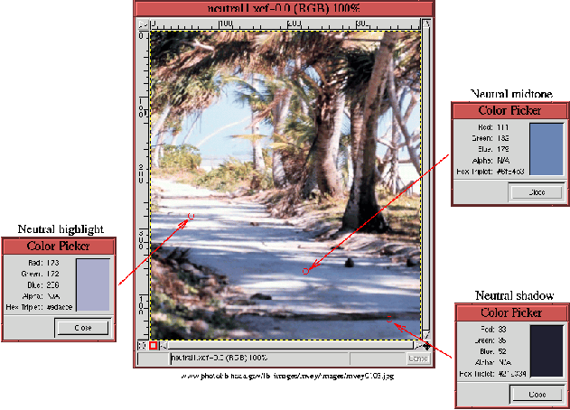
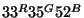
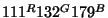
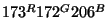
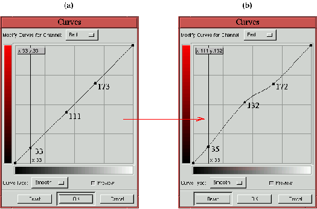
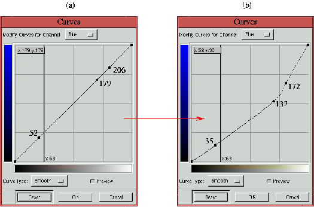
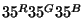
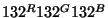
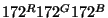
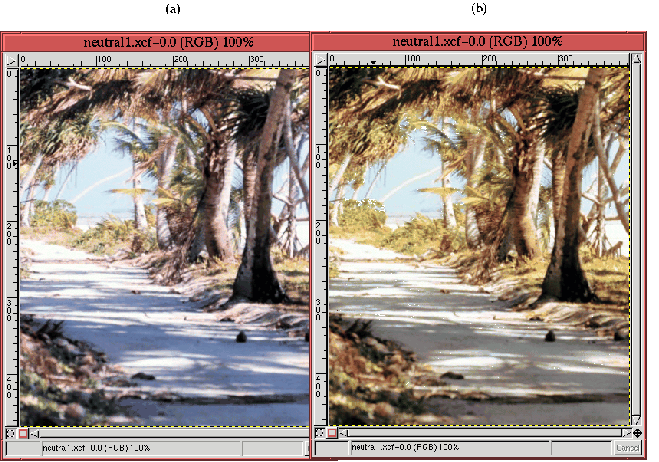

Next: 11.2.3
Определение областей бликов, Up: 11.2
Коррекция цветового сдвига Previous: 11.2.1
Инструмент ``Кривые''
Next: 11.2.3
Определение областей бликов, Up: 11.2
Коррекция цветового сдвига Previous: 11.2.1
Инструмент ``Кривые''
11.2.2 Коррекция цвета при
помощи баланса нейтральных тонов
Мощный метод определения наличия цветового сдвига - определение цвета точек,
которые в принципе должны быть нейтрально серыми. Нейтрально серые точки
содержат равные значения Красной, Зеленой и Синей составляющих. Если это не так,
значит есть цветовой сдвига и необходима цветокоррекция.
Figure: Изображение с цветовым сдвигом?
Измерения говорят,- Да!
 |
Рисунок 11.13
демонстрирует случай, когда определение нейтральных точек позволяет
скорректировать цветовой сдвиг. На картинке галерея пальм отбрасывает тени на
дорожку из белого песка, и, в принципе, эти тени должны быть нейтрального серого
цвета.
Тени имеют широкий диапазон значений яркости, что дает возможность определить
цвета для светлых, средних и темных участков теней. На рисунке 11.13
они обозначены как нейтральный блик, нейтральный полутон и нейтральная тень,
значения соответствующих цветов определены при помощи инструмента ``Пипетка''
(инструмент ``Пипетка'' находится на панели инструментов). Образцы цветов,
взятые в указанных трех точках представлены в диалоговых окнах инструмента
``Пипетка'' в виде цветного прямоугольника и значений Красной Зеленой и Синий
составляющих. Определение цвета при помощи инструмента ``Пипетка'' также
приводит к тому, что цвет переднего плана на панели инструментов меняется на
определяемый.
В трех точках, показанных на рисунке 11.13
можно наблюдать присутствие синего оттенка. Цвета в диалоговых окнах инструмента
``Пипетка'' отклоняются в синюю гамму не только ``на глаз'', значения Красной,
Зеленой и Синей составляющих показывают значительное отклонение синей
составляющей от значения, при котором цвета выглядели бы нейтральными. Используя
цветовую нотацию (форму записи) цвета, введенную в разделе 10.1,
цвета, показанные в диалоговых окнах инструмента ``Пипетка'' на рис 11.13
имеют значения

для тени,

для полутона и

для света. Все три значения ясно показывают, что слишком много синего.
Тени иногда действительно выглядят голубыми. Однако это обычно бывает зимой
на широтах далеких от экватора из-за особенностей фильтрации солнечных лучей
атмосферой Земли. Синий оттенок на рисунке 11.13
скорее вызван тенденцией пленки, особенно слайдовой пленки, вызывать сдвиг
цветов в сторону синего при съемках под открытым небом при естественном
освещении. В любом случае, в районах, близких к экватору, следует ожидать
полного спектра солнечного света, что должно приводить к нейтральным теням, если
они наблюдаются на нейтральном фоне.
В дополнение к синему сдвигу, возможен также некоторый недостаток красного в
области полутонов. Далее будет показано, как цветовой сдвиг в сторону синего и
недостаток красного в полутонах могут быть скорректированы при помощи
инструмента ``Кривые''.
Figure: Использование цветовых значений
для изменения Красной кривой
 |
Figure: Использование цветовых значений
для изменения Синей кривой
 |
На рисунках 11.14
и 11.15
показано, как использовать инструмент ``Кривые'' для разрешения этих проблем с
цветами. Рисунок 11.14
демонстрирует изменения Красной кривой, рисунок 11.15
- Синей. Процедуры настройки идентичны для каждой из кривых. Красная и синяя
компоненты измеренных цветов используются для добавления контрольных точек на
соответствующие кривые. Это продемонстрировано на части (a) каждого из рисунков.
Информационное поле, находящееся в левом верхнем углу зоны графика, облегчает
точное размещение контрольных точек. Затем контрольные точки перемещаются вверх
или вниз в вертикальном направлении на новые позиции, что приводит к изменению
характеристик отображения и делает цвета в измеренных точках нейтральными.
Смещенные контрольные точки показаны на части (b) каждого из рисунков.
Повторим снова, цель смещения контрольных точек - сделать цвета в каждой из
измеренных точек изображения нейтральными. Это означает, что их Красная, Зеленая
и Синяя составляющие должны быть одинаковы. В рассматриваемом примере это
достигается путем смещения контрольных точек на синей и красной кривых так,
чтобы сделать их значения равными значению измеренной зеленой составляющей.
Заметьте, что числа рядом с контрольными точками на рисунках 11.14
и 11.15
приведены для пояснения смысла процедуры, инструмент ``Кривые'' их не
показывает. Для точного позиционирования контрольных точек используйте
информационное поле в левом верхнем углу зоны графика.
Таким образом, на Красной кривой значения точек для тени, полутона и света
сдвинуты с 33, 111 и 173 к измеренным значениям зеленого - 35, 132 и 172. На
Синей кривой значения для тени полутона и света сдвинуты от 52, 179 и 206 также
к измеренным значения зеленого - 35, 132 и 172. После проведения этих
манипуляций цвета в измеренных точках стали

для тени,

для полутонов и

для света, все три - нейтрально серые.
Результат коррекции цветов нейтральных точек показан на рисунке 11.16
(b).
Figure: Сравнение исходного и
скорректированного изображения
 |
Для сравнения исходное изображение показано на рисунке 11.16
(a). Теперь ясно видно, что исходное изображение имело синий цветовой сдвиг,
который устранен на скорректированном изображении. Измерения цвета на песчаной
дорожке показывают, что баланс цветов выглядит значительно лучше и большинство
теней теперь нейтральны. Более того, изображение в целом приобрело более теплый
вид. Пальмы теперь купаются в желтом свете, более соответствующем тому, чего мы
ожидаем от освещенной тропическим солнцем сцены.
Есть несколько практических вопросов, касающихся только что описанной
процедуры коррекции цветов. Во-первых, почему красный и синий каналы
``подтягиваются'' к зеленому? Для трех измеренных точек существует девять
способов сделать их нейтральными. Однако, на практике обычно какие либо два
канала почти одинаковы, а один значительно отличается. Если это так, как в
проделанном примере, то выбор ясен, если же нет, то может потребоваться
поэксперементировать.
Второй вопрос - почему цвета измеряются в трех точках? Метод не требует трех
точек и, как это не удивительно, часто одной точки достаточно, чтобы
скорректировать цвета всего изображения. Однако подбор блика, тени и полутона
дает дополнительную страховку правильного баланса цветов в каждом диапазоне.
Инструмент ``Кривые'' имеет некоторые возможности, которые облегчают
размещение точек на кривой. Нажатие левой кнопки мыши в окне изображения
приводит к появлению в области графика вертикальной линии. Положение
вертикальной линии отражает соответствующее значение точки изображения, над
которой находится курсор. Перемещение мыши с нажатой левой кнопкой изменяет
положение вертикальной линии. Это позволяет видеть, где различные точки
изображения находятся на кривой и помогает определить тень, полутон и блик.
Одновременное нажатие левой кнопки мыши и Shift в окне изображения
автоматически создает контрольную точку на кривых для активного канала.
Одновременное нажатие левой кнопки мыши и Ctrl автоматически создает
контрольную точку на кривых для каждого из каналов.
В дополнение к инструменту ``Кривые'' есть еще один полезный инструмент для
исследования проблем с балансом цветов - ``Информация об окне''. Он
находится в меню окна изображения Просмотр->Информация об окне.
Закладка ``Расширенное'' этого диалога позволяет интерактивно определять
значения Красной, Зеленой и Синей составляющих для точки изображения, над
которой находится курсор мыши. Преимущество этого инструмента перед ``Пипеткой''
в том, что его окно может оставаться открытым в процессе использования
инструмента ``Кривые''.
В заключение этого раздела можно сделать несколько выводов. Первое, процесс
коррекции цветов может быть очень простым. Определение цветовых составляющих в
нескольких точках от тени до блика позволяет скорректировать цвета во всем
изображении за несколько минут. Второе, коррекция цвета выполненная таким
способом не только исправляет проблемы с цветовым балансом в выбранных точках,
но и, обычно, улучшает изображение в целом. Третье, для коррекции цвета,
основанной на измеренных значениях точек можно обойтись только одним
инструментом - ``Кривые''. По этим причинам ``Кривые'' - это наиболее точный и
мощный инструмент для цветокоррекции в GIMP.
Next: 11.2.3
Определение областей бликов, Up: 11.2
Коррекция цветового сдвига Previous: 11.2.1
Инструмент ``Кривые''
Grigory Bakunov 2003-05-26